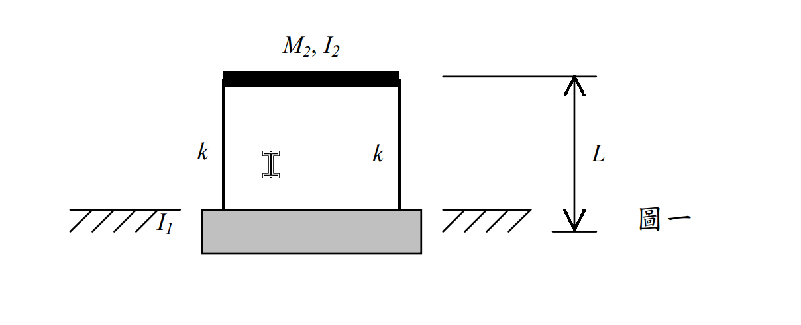
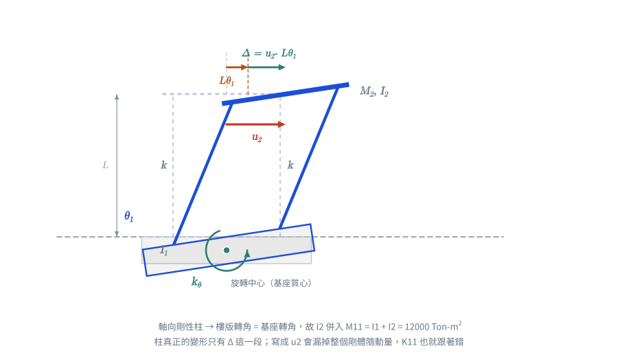
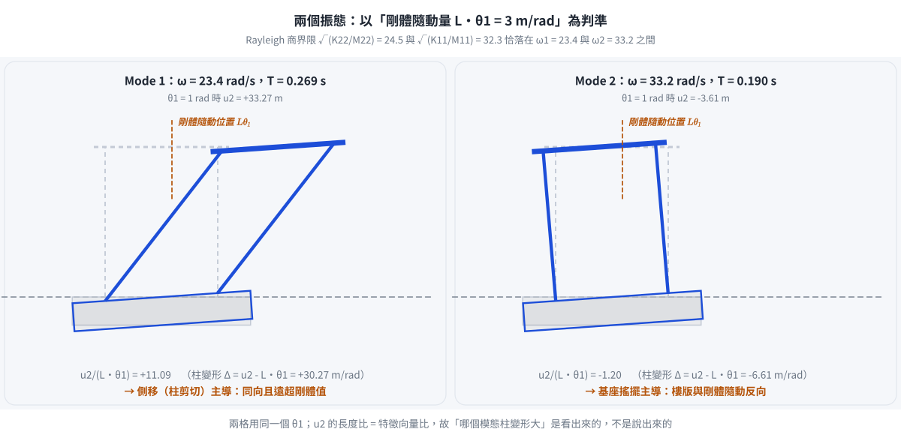

考題編號：SD-2002-1
主分類： SD-U1 結構動力學基礎
副分類： SD-U1-3 多自由度系統動態分析
分析方法： MDOF 特徵值分析（柔性基座 SSI 模型）
標籤： 柔性基座 土壤結構互制 SSI 旋轉彈簧 特徵值問題 自然頻率 振態 軸向剛性柱 2DOF
1. 原始題目重述 (Problem Restatement)
一單層房屋（剪力構架），基座可繞其質心旋轉（不得水平或垂直位移），土壤旋轉彈簧勁度 $k_\theta$，樓版以兩根柱（每根側向勁度 $k$）支撐於基座。

圖說：基座質心旋轉彈簧 $k_\theta = 1.2 \times 10^7\ \text{kN-m/rad}$；基座轉動慣量 $I_1 = 8000\ \text{Ton-m}^2$；樓版質量 $M_2 = 100\ \text{Ton}$，樓版轉動慣量 $I_2 = 4000\ \text{Ton-m}^2$；基座（旋轉中心）至樓版之高度 $L = 3\ \text{m}$；每根柱側向勁度 $k = 3 \times 10^4\ \text{kN/m}$（共兩根）。
模型化說明： 圖中 $L$ 標於地表至樓版之間。基座為剛塊且僅能繞其質心旋轉，故解題時將 $L$ 一併視為「旋轉中心至樓版的力臂」（即忽略基礎版厚度的影響）。此為本題唯一的模型化假設，考場上寫明即可。
已知條件：
| 符號 | 數值 | 說明 |
|---|---|---|
| $k_\theta$ | $1.2 \times 10^7\ \text{kN-m/rad}$ | 基座土壤旋轉彈簧勁度 |
| $I_1$ | $8000\ \text{Ton-m}^2$ | 基座轉動慣量（繞基座質心） |
| $M_2$ | $100\ \text{Ton}$ | 樓版質量 |
| $I_2$ | $4000\ \text{Ton-m}^2$ | 樓版轉動慣量 |
| $L$ | $3\ \text{m}$ | 基座旋轉中心至樓版之高度（＝柱的力臂） |
| $k$ | $3 \times 10^4\ \text{kN/m}$ | 每根柱側向勁度 |
基座約束： 僅可繞基座質心旋轉（無水平、垂直位移）
忽略： 柱的軸向變形（柱為軸向剛性）
求： 系統自然頻率與振態
2. 考題核心精神與出題者意圖 (Core Concepts & Examiner's Intent)
核心觀念： 土壤-結構互制（SSI）問題——基礎不再固定，基座的旋轉自由度引入額外的彈性與慣性，改變整體動力特性。
出題意圖：
- 考驗「正確識別自由度」的能力——軸向剛性柱的約束使樓版旋轉角等於基座旋轉角（$\theta_2 = \theta_1$），進而使 $I_2$ 出現在質量矩陣。
- 測試能否正確建立 Lagrangian、導出耦合質量矩陣（非對角線為零）與耦合勁度矩陣（非對角線不為零）。
- 考驗特徵值問題的手算能力。
關鍵陷阱： 若忽略 $I_2$（誤用純剪力構架假設，以為樓版不旋轉），質量矩陣 $M_{11}$ 只取 $I_1 = 8000$，將得到錯誤答案。軸向剛性柱的約束正是要使 $\theta_2 = \theta_1$，讓 $I_2$ 也貢獻至旋轉慣量。
3. 解題戰略地圖與陷阱分析 (Strategic Roadmap & Trap Analysis)
作戰計畫（5步）：
- 識別自由度：基座 $\theta_1$、樓版 $u_2$（水平）；柱軸向剛性 → $\theta_2 = \theta_1$
- 寫出動能 $T$（含 $I_2$）與位能 $V$（柱變形量 = $u_2 - L\theta_1$）
- 用 Lagrange 方程導出 $[M]\{\ddot{q}\} + [K]\{q\} = 0$
- 解特徵方程（$\det([K] - \omega^2[M]) = 0$）→ 得 $\omega_1^2, \omega_2^2$
- 代回求振態 $\{1,\ \phi_{2n}\}$
陷阱分析：
| # | 陷阱 | 應對 |
|---|---|---|
| ⚠ | 忽略軸向剛性約束 → $\theta_2 \neq \theta_1$ → $I_2$ 消失 | 牢記「軸向剛性 + 對稱兩柱 → 樓版旋轉 = 基座旋轉」 |
| ⚠ | 柱變形量寫成 $u_2$（絕對位移）而非 $u_2 - L\theta_1$（相對位移） | 柱變形 = 樓版絕對位移 − 基座旋轉造成的剛體位移 $L\theta_1$ |
| ⚠ | $K_{12}$ 符號錯誤（+$2kL$ 而非 $-2kL$） | 從 $\partial V/\partial \theta_1$ 展開即可確認符號 |
| ⚠ | 特徵多項式係數算錯（$7.2 \times 10^{11}$ 項忘減 $K_{12}^2$） | det展開時分開計算對角積與耦合項平方，再相減 |
3.5 變數層次分析 (Variable Hierarchy Analysis)
複習提示：第一次解題後，在每個卡住的知識點旁標記
⚠；第二次複習時只看有⚠的項目。
最終目標
求 2-DOF 柔性基座系統的兩個自然頻率 $\omega_1, \omega_2$ 及對應振態 $\{\phi\}_1, \{\phi\}_2$。
本題關鍵公式（依計算順序）
$$\text{Step 1（約束）：} \theta_2 = \theta_1 \quad (\text{軸向剛性柱})$$
$$\text{Step 2（動能）：} T = \frac{1}{2}(I_1+I_2)\dot{\theta}_1^2 + \frac{1}{2}M_2\dot{u}_2^2$$
$$\text{Step 3（柱變形）：} \Delta = u_2 - L\theta_1$$
$$\text{Step 4（位能）：} V = \frac{1}{2}k_\theta\theta_1^2 + \frac{1}{2}(2k)\Delta^2$$
$$\text{Step 5（勁度矩陣）：} [K] = \begin{bmatrix} k_\theta + 2kL^2 & -2kL \\ -2kL & 2k \end{bmatrix}$$
$$\text{Step 6（特徵方程）：} \det\!\left([K] - \omega^2[M]\right) = 0 \implies \omega^4 - \boxed{\left(\frac{K_{11}}{I_1+I_2}+\frac{K_{22}}{M_2}\right)}\omega^2 + \frac{\det[K]}{(I_1+I_2)M_2} = 0$$
$$\text{Step 7（振態）：} \frac{u_2}{\theta_1} = \frac{\boxed{K_{11}} - \omega_n^2(I_1+I_2)}{2kL}$$
L1：題目直接給定
| 符號 | 數值 | 說明 |
|---|---|---|
| $k_\theta$ | $1.2 \times 10^7\ \text{kN-m/rad}$ | 基座旋轉彈簧勁度 |
| $I_1$ | $8000\ \text{Ton-m}^2$ | 基座轉動慣量 |
| $I_2$ | $4000\ \text{Ton-m}^2$ | 樓版轉動慣量 |
| $M_2$ | $100\ \text{Ton}$ | 樓版質量 |
| $L$ | $3\ \text{m}$ | 旋轉中心至樓版高度 |
| $k$ | $3 \times 10^4\ \text{kN/m}$ | 每根柱勁度 |
L2：需知識點推導
【自由度識別與約束】
| 符號 | 公式／來源 | 卡關? |
|---|---|---|
| $\theta_2 = \theta_1$ | 軸向剛性柱＋對稱配置 → 樓版旋轉角 = 基座旋轉角 | |
| $\Delta = u_2 - L\theta_1$ | 柱變形 = 樓版絕對位移 − 基座旋轉剛體位移 |
【矩陣元素】
| 符號 | 公式／來源 | 卡關? |
|---|---|---|
| $M_{11} = I_1+I_2$ | 旋轉 DOF 的等效慣量（含基座與樓版） | |
| $M_{22} = M_2$ | 平移 DOF 的慣量 | |
| $K_{11} = k_\theta + 2kL^2$ | $\partial^2 V/\partial\theta_1^2$，含旋轉彈簧 + 柱力臂效應 | |
| $K_{12} = -2kL$ | $\partial^2 V/\partial\theta_1\partial u_2$ | |
| $K_{22} = 2k$ | $\partial^2 V/\partial u_2^2$，兩柱並聯 |
【特徵方程與求解】
| 符號 | 公式／來源 | 卡關? |
|---|---|---|
| $a = M_{11}M_{22}$ | 特徵多項式 $\omega^4$ 係數 | |
| $b = -(K_{11}M_{22}+K_{22}M_{11})$ | 特徵多項式 $\omega^2$ 係數 | |
| $c = K_{11}K_{22}-K_{12}^2$ | 特徵多項式常數項 | |
| $\omega_{1,2}^2 = (-b \pm \sqrt{b^2-4ac})/(2a)$ | 二次公式 |
L3：深層知識（不懂就卡住）
| 知識點 | 說明 | 卡關? |
|---|---|---|
| 軸向剛性約束的幾何意義 | 兩根對稱的軸向剛性柱，迫使樓版旋轉角 = 基座旋轉角；否則柱長會改變 | |
| Lagrange 方程使用條件 | 廣義座標 $\{q\} = \{\theta_1, u_2\}$；$T, V$ 對 $q_i, \dot{q}_i$ 取偏微分 | |
| 柱的「剛體位移」vs「變形」 | 基座旋轉時，柱隨之傾斜（剛體），樓版再有 $u_2$ 才是真正的柱側向變形 = $u_2 - L\theta_1$ | |
| $I_2$ 進入方程的條件 | 樓版有旋轉 → $I_2\dot{\theta}_2^2/2$ → 本題 $\theta_2=\theta_1$，故 $I_2$ 合入 $M_{11}$ |
4. 步驟化詳細計算過程 (Step-by-Step Detailed Calculation)
Step 1：識別廣義座標與動力學約束
系統廣義座標： $$\{q\} = \begin{Bmatrix} q_1 \\ q_2 \end{Bmatrix} = \begin{Bmatrix} \theta_1 \\ u_2 \end{Bmatrix}$$
$\theta_1$：基座旋轉角（CCW 正）；$u_2$：樓版質心絕對水平位移
軸向剛性約束推導： 對稱兩柱（間距 $\pm a$），柱軸向剛性 → 右柱頂端垂直位移 = 右柱底端垂直位移。基座旋轉 $\theta_1$ 時，右柱底端垂直位移 $= +a\theta_1$；故樓版右側也上升 $a\theta_1$，即樓版旋轉角 $\theta_2 = \theta_1$。
$$\boxed{\theta_2 = \theta_1}$$

圖 1 自由度與柱變形。柱的變形只有 $\Delta = u_2 - L\theta_1$ 這一段——把它寫成 $u_2$ 會連同剛體隨動量 $L\theta_1$ 一起算進彈性能，$K_{11}$ 與 $K_{12}$ 都會錯。圖上同時標出軸向剛性使 $\theta_2 = \theta_1$、因而 $I_2$ 必須併入 $M_{11}$。
Step 2：建立動能 $T$ 與位能 $V$
動能： $$T = \underbrace{\frac{1}{2}I_1\dot{\theta}_1^2}_{\text{基座}} + \underbrace{\frac{1}{2}M_2\dot{u}_2^2}_{\text{樓版平移}} + \underbrace{\frac{1}{2}I_2\dot{\theta}_2^2}_{\text{樓版旋轉}} = \frac{1}{2}(I_1+I_2)\dot{\theta}_1^2 + \frac{1}{2}M_2\dot{u}_2^2$$
柱側向變形量（= 樓版絕對位移 − 基座旋轉造成的剛體位移）： $$\Delta = u_2 - L\theta_1$$
位能： $$V = \frac{1}{2}k_\theta\theta_1^2 + \frac{1}{2}(2k)\Delta^2 = \frac{1}{2}k_\theta\theta_1^2 + k(u_2 - L\theta_1)^2$$
Step 3：Lagrange 方程 → 運動方程
$$\frac{d}{dt}\!\left(\frac{\partial T}{\partial \dot{q}_i}\right) - \frac{\partial T}{\partial q_i} + \frac{\partial V}{\partial q_i} = 0$$
對 $\theta_1$： $$\frac{\partial V}{\partial \theta_1} = k_\theta\theta_1 + 2k(u_2-L\theta_1)(-L) = (k_\theta + 2kL^2)\theta_1 - 2kLu_2$$
$$(I_1+I_2)\ddot{\theta}_1 + (k_\theta + 2kL^2)\theta_1 - 2kLu_2 = 0$$
對 $u_2$： $$\frac{\partial V}{\partial u_2} = 2k(u_2-L\theta_1) = 2ku_2 - 2kL\theta_1$$
$$M_2\ddot{u}_2 - 2kL\theta_1 + 2ku_2 = 0$$
Step 4：矩陣形式
$$[M]\{\ddot{q}\} + [K]\{q\} = \{0\}$$
$$[M] = \begin{bmatrix} I_1+I_2 & 0 \\ 0 & M_2 \end{bmatrix} = \begin{bmatrix} 12000 & 0 \\ 0 & 100 \end{bmatrix} \text{ Ton-m}^2,\ \text{Ton}$$
$$[K] = \begin{bmatrix} k_\theta + 2kL^2 & -2kL \\ -2kL & 2k \end{bmatrix}$$
數值代入： $$2k = 2 \times 3 \times 10^4 = 6 \times 10^4\ \text{kN/m}$$ $$2kL = 6 \times 10^4 \times 3 = 1.8 \times 10^5\ \text{kN}$$ $$2kL^2 = 1.8 \times 10^5 \times 3 = 5.4 \times 10^5\ \text{kN-m}$$ $$K_{11} = 1.2 \times 10^7 + 5.4 \times 10^5 = 1.254 \times 10^7\ \text{kN-m}$$
$$[K] = \begin{bmatrix} 1.254 \times 10^7 & -1.8 \times 10^5 \\ -1.8 \times 10^5 & 6 \times 10^4 \end{bmatrix}$$
Step 5：特徵值問題
令 $\{q\} = \{\phi\}e^{i\omega t}$，代入得：
$$\det([K] - \omega^2[M]) = 0$$
$$(K_{11} - \omega^2 M_{11})(K_{22} - \omega^2 M_{22}) - K_{12}^2 = 0$$
展開：
$$M_{11}M_{22}\omega^4 - (K_{11}M_{22} + K_{22}M_{11})\omega^2 + (K_{11}K_{22} - K_{12}^2) = 0$$
$$1.2 \times 10^6\,\omega^4 - (1.254 \times 10^7 \times 100 + 6 \times 10^4 \times 12000)\,\omega^2 + (1.254 \times 10^7 \times 6 \times 10^4 - (1.8 \times 10^5)^2) = 0$$
各項係數： $$\text{係數}_{\omega^4}: 1.2 \times 10^6$$ $$\text{係數}_{\omega^2}: -(1.254 \times 10^9 + 7.2 \times 10^8) = -1.974 \times 10^9$$ $$\text{常數}: 7.524 \times 10^{11} - 3.24 \times 10^{10} = 7.2 \times 10^{11}$$
除以 $1.2 \times 10^6$：
$$\omega^4 - 1645\,\omega^2 + 6 \times 10^5 = 0$$
Step 6：求解二次方程
令 $\lambda = \omega^2$：
$$\lambda^2 - 1645\lambda + 6 \times 10^5 = 0$$
$$\lambda = \frac{1645 \pm \sqrt{1645^2 - 4 \times 6 \times 10^5}}{2} = \frac{1645 \pm \sqrt{2706025 - 2400000}}{2} = \frac{1645 \pm \sqrt{306025}}{2}$$
$$\sqrt{306025} \approx 553.2$$
$$\lambda_1 = \frac{1645 - 553.2}{2} = \frac{1091.8}{2} \approx 545.9\ \text{rad}^2/\text{s}^2$$
$$\lambda_2 = \frac{1645 + 553.2}{2} = \frac{2198.2}{2} \approx 1099.1\ \text{rad}^2/\text{s}^2$$
驗算： $\lambda_1 + \lambda_2 = 1645$ ✓；$\lambda_1 \times \lambda_2 \approx 6 \times 10^5$ ✓
$$\boxed{\omega_1 = \sqrt{545.9} \approx 23.4\ \text{rad/s}}, \quad T_1 = \frac{2\pi}{23.4} \approx 0.269\ \text{s}$$
$$\boxed{\omega_2 = \sqrt{1099.1} \approx 33.2\ \text{rad/s}}, \quad T_2 = \frac{2\pi}{33.2} \approx 0.189\ \text{s}$$
Step 7：求振態
由第二方程 $-1.8 \times 10^5\,\phi_1 + (6 \times 10^4 - 100\omega_n^2)\phi_2 = 0$，令 $\phi_1 = 1\ \text{rad}$：
振態 1（$\omega_1^2 = 545.9$）： $$(60000 - 545.9 \times 100)\phi_{21} = 1.8 \times 10^5$$ $$(60000 - 54590)\phi_{21} = 180000$$ $$5410\,\phi_{21} = 180000 \implies \phi_{21} = \frac{180000}{5410} \approx 33.27\ \text{m/rad}$$
$$\boxed{\{\phi\}_1 = \begin{Bmatrix} 1\ \text{rad} \\ 33.27\ \text{m} \end{Bmatrix}}$$
振態 2（$\omega_2^2 = 1099.1$）： $$(60000 - 1099.1 \times 100)\phi_{22} = 1.8 \times 10^5$$ $$(60000 - 109910)\phi_{22} = 180000$$ $$-49910\,\phi_{22} = 180000 \implies \phi_{22} = \frac{180000}{-49910} \approx -3.61\ \text{m/rad}$$
$$\boxed{\{\phi\}_2 = \begin{Bmatrix} 1\ \text{rad} \\ -3.61\ \text{m} \end{Bmatrix}}$$
結果彙整
| 振態 | $\omega_n$ (rad/s) | $T_n$ (s) | $\theta_1$ | $u_2$ | 物理意義 |
|---|---|---|---|---|---|
| 1 | 23.4 | 0.269 | 1 rad | +33.27 m | 樓版側移遠大於剛體隨動量（側移主導，同向） |
| 2 | 33.2 | 0.189 | 1 rad | −3.61 m | 樓版與基座剛體隨動方向相反（搖擺主導） |
如何判斷「側移主導」還是「搖擺主導」？ 若結構整體作剛體搖擺（柱完全不變形），樓版位移應為 $u_2 = L\theta_1 = 3\ \text{m/rad}$。 - 振態 1：$u_2/\theta_1 = 33.27 \gg 3$ → 柱變形量 $\Delta = u_2 - L\theta_1 = +30.27$，遠大於剛體項 → 側移（柱剪切變形）主導 - 振態 2：$u_2/\theta_1 = -3.61$，$\Delta = -3.61 - 3 = -6.61$，且樓版反向 → 基座搖擺主導

圖 2 兩個振態，兩格用同一個 $\theta_1$，$u_2$ 的長度比即特徵向量比。橙色虛線是「柱完全不變形」時樓版應在的位置（$L\theta_1$）；振態 1 遠超過它、振態 2 落在反側，「側移主導 vs. 搖擺主導」因此是量出來的，不是講出來的。
驗算一：Rayleigh 商界限（對角商必落在兩特徵值之間）
- 旋轉 DOF 固定平移：$\sqrt{K_{11}/M_{11}} = \sqrt{1.254\times10^7/12000} = \sqrt{1045} \approx 32.3\ \text{rad/s}$
- 平移 DOF 固定旋轉：$\sqrt{K_{22}/M_{22}} = \sqrt{6\times10^4/100} = \sqrt{600} \approx 24.5\ \text{rad/s}$
$\omega_1 = 23.4 < 24.5 < 32.3 < 33.2 = \omega_2$ ✓（耦合使頻率向外分叉）
驗算二：純搖擺頻率（不含柱抗傾覆貢獻） $\omega_\theta = \sqrt{k_\theta/(I_1+I_2)} = \sqrt{1.2\times10^7/12000} = \sqrt{1000} \approx 31.6\ \text{rad/s}$
此值只用來檢查數量級，不是 Rayleigh 商的界限（界限須用 $K_{11}$，含 $2kL^2$ 項）。
5. 關鍵爭議點與進階探討 (Critical Issues & Advanced Discussion)
爭議：I₂ 是否應包含？
本題關鍵在軸向剛性柱的幾何約束：$\theta_2 = \theta_1$。若題目未明確說明「忽略軸向變形」，可能有兩種解讀：
- 包含 $I_2$（本解）： 軸向剛性 → $\theta_2 = \theta_1$ → $M_{11} = I_1 + I_2 = 12000$
- 不含 $I_2$（剪力建築假設）： 樓版不旋轉 → $M_{11} = I_1 = 8000$
本題明確說明「不考慮柱軸向變形」，故應包含 $I_2$。考場上若有疑義，說明假設即可。
SSI（土壤-結構互制）的實務意義： 柔性基礎使有效週期延長（$T_1 = 0.269\ \text{s}$ vs 純固定基礎），通常有利於降低加速度反應，但可能增大位移，需注意與鄰近結構的撞擊問題。
修正紀錄
| 日期 | 修正內容 | 理由／驗證 |
|---|---|---|
| 2026-08-22 | $k_\theta$ 單位由 kN-m 補正為 kN-m/rad |
旋轉彈簧勁度的量綱為力矩／弧度 |
| 2026-08-22 | $L$ 的描述由「樓版質心至基座質心距離」改為「基座旋轉中心至樓版之高度」，並加註模型化說明 | 對照題目附圖，$L$ 標註於地表至樓版之間，原描述與圖不符 |
| 2026-08-22 | 結果彙整的「無耦合自然頻率驗算」由 $\sqrt{k_\theta/(I_1+I_2)}=31.6$ 改為 Rayleigh 商界限 $\sqrt{K_{11}/M_{11}}=32.3$ | 特徵值的交錯界限（interlacing）必須用勁度矩陣對角元 $K_{11}=k_\theta+2kL^2$，原式漏掉柱的抗傾覆貢獻，只是巧合仍落在區間內 |
| 2026-08-22 | 振態物理意義加入與剛體隨動量 $L\theta_1=3$ m/rad 的比較 | 原表只寫「側移主導／搖擺主導」而無判準 |
計算主體（$[M]$、$[K]$、特徵方程、$\omega_{1,2}$、振態）經重新驗算全部正確，未更動。
圖解補繪：2026-08-22（向量圖，由 gen_SD-2002-1.py 以程式碼繪製，所有幾何與數值由解題結果算出，可重跑）